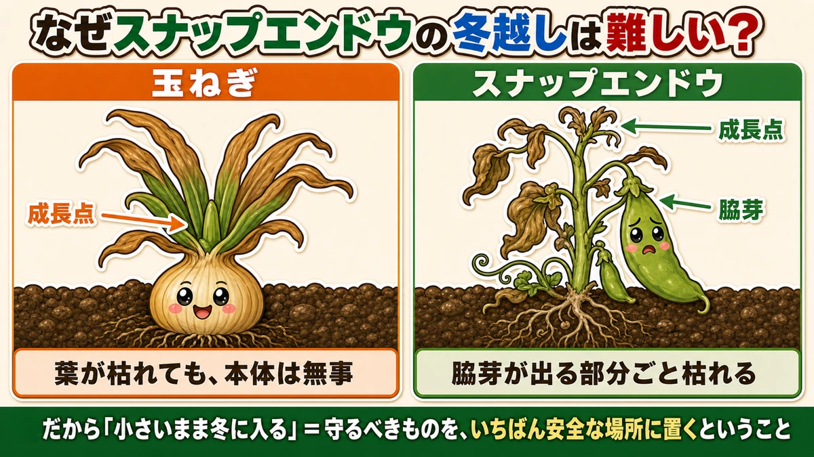
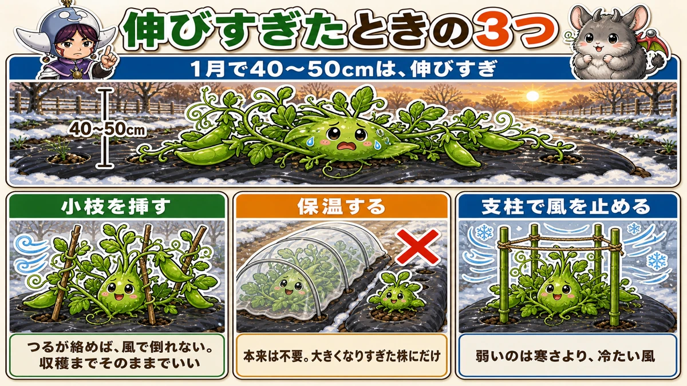
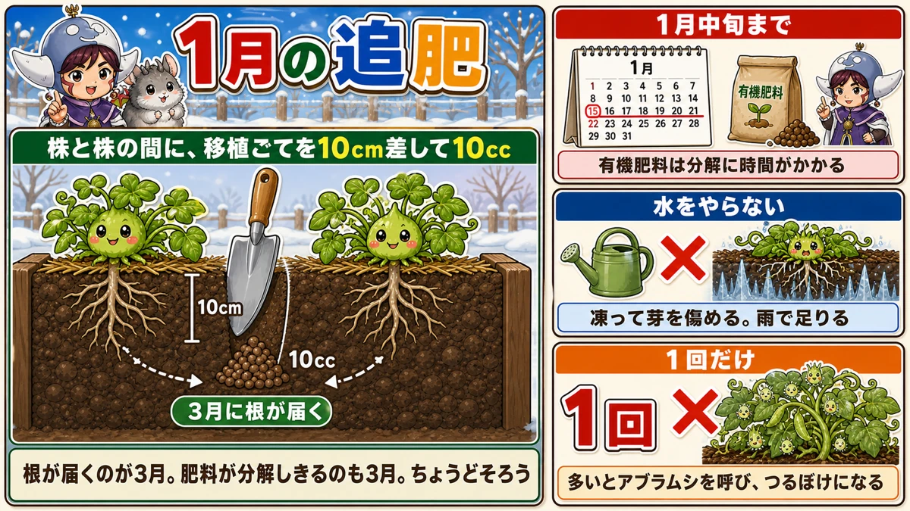
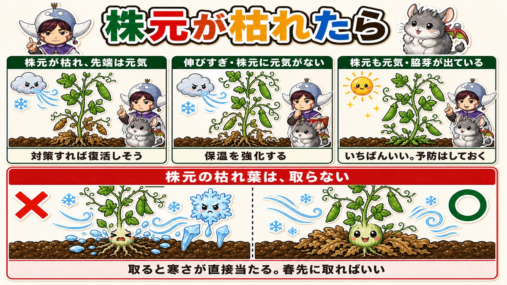
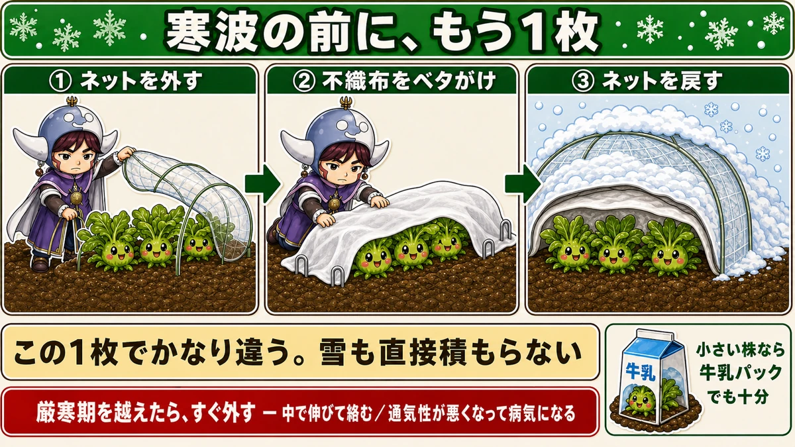

Don't pull it up when it browns Getting peas through the hardest weeks

🗨️ "Mild autumn, and mine have got far too big. Will they be all right?"
🗨️ "The base of the plant is browning. Is it finished?"
🗨️ "What am I actually meant to do in midwinter?"
Hello, I'm Eiko. Eight years of growing vegetables organically and without pesticides, and a teaching licence in science.
This is about sugar snap peas and broad beans through the coldest weeks of the year.
The point, up front:
However bad it looks, don't pull it up.
Overwintering peas get steadily uglier. Lower leaves brown, the base wilts, and you conclude you've failed. Pulling them at that stage is nearly always too early.
And one more thing: of everything you plant in autumn, this is the hardest to carry through the winter. For a very specific reason ☺️
Why this crop in particular

What this diagram says （図解の文字）
- Why is overwintering sugar snap peas hard?
- Onion — growing point — the leaves can die and the plant itself is unharmed
- Sugar snap — growing point ／ side shoot — the part the side shoots come from dies with it
- Which is why "go into winter small" means putting the thing you must protect in the safest place
Compare it with what else goes in at the same time: onions, garlic, strawberries. Peas are less hardy than any of them.
But being tender is only half of it. The real problem is that mistakes can't be recovered.
An onion doesn't mind losing its leaves
Frost can take an onion's leaves and the plant is fine, because the growing point sits at ground level — just above the bulb, right at the soil surface. The top can die and the factory is untouched, so it simply makes new leaves in spring.
On a pea, it's up the stem
With peas, both the growing point and the places side shoots emerge are high up the stem.
So when the stem is killed, the shoots that were going to be next season's growth are killed with it.
The part the side shoots come from dies too. That's the frightening bit — the onion's style of recovery simply isn't available.
Which is why going into winter small matters. A small plant has its growing point close to the ground, where wind is weaker and the soil's own warmth helps. You are putting the thing that must survive in the safest available place.
If yours have got too big — three things to do

What this diagram says （図解の文字）
- Three things to do when they've grown too big — 40–50 cm in midwinter is too big
- Push twigs in — once the tendrils grip, wind can't flatten them. Leave them there until harvest
- Cover for warmth — × normally unnecessary. Only for plants that got too big
- Block the wind with canes — what hurts them isn't the cold so much as cold wind
In a mild autumn you can find yourself with 40–50 cm (16–20 in) plants in midwinter. It's happened to me.
Left alone, the extended growth will be killed by cold. Not everything dies — but it's a waste to do nothing. Three options:
① Push twigs in around the plants
The easiest, and it works.
A climbing variety with nothing to grip lies flat on the mulch, and a flattened plant grows badly.
So push twigs or brushwood in around them and let the tendrils take hold. Rosemary prunings do fine. All it needs is something to grab.
The aim is simply to stop them being blown flat on a windy day. Once they've gripped, leave the twigs there until harvest — there's no need to take them out.
② Cover them
Normally you don't put a tunnel over peas at this point, because they need the cold to flower.
Over-large plants are the exception. They need serious protection to come through at all, so you cover those and only those. There isn't another answer.
③ Put canes up and stop the wind
Worth repeating: what hurts them isn't the cold so much as the cold wind. Even just canes and a screen around the bed changes how many survive.
The midwinter feed — three cautions

What this diagram says （図解の文字）
- The midwinter top-dressing
- Between two plants, push a trowel in 10 cm and put in 10 ml
- The roots reach there in early spring. The organic feed finishes breaking down then too — the two line up
- Organic fertiliser takes time to break down
- Don't water — × it freezes and damages the shoots. Rain is enough
- Once only
This is nearly all there is to do in winter — and done wrong it works against you.
① Get it in by midwinter
Organic feed only works after microbes have broken it down, which takes time. In by the middle of winter, or it won't be available when the pods are filling.
(A synthetic feed acts fast enough to go in later.)
② Don't water after feeding
Counter-intuitive, perhaps. Watering in the deep cold encourages needle ice, and water around the shoots can freeze and damage them.
At this time of year rain soaks in properly, and watering is essentially unnecessary.
③ Feed once, and only once
The most important of the three.
Feeding now produces no visible growth, so people conclude it isn't working and do it again. That backfires:
- Excess feed attracts pests — aphids in particular
- You get all vine and no pods
Once. That's the rule.
How much, and where
- 10 ml per station
- Push a trowel about 10 cm (4 in) in, between two plants
- Lever it back and forth a little and drop the feed in
- Backfill and firm it down
That 10 ml is one plant's worth. Growing a single plant? Put 5 ml on each side of it. Four plants, four stations of 10 ml.
The roots haven't reached that far yet, so there's no risk of damaging them.
And here's the satisfying part: the roots arrive there around early spring. The organic feed finishes breaking down around early spring. The two line up exactly — and it gets used as the flowers open and the pods set. That's what the midwinter timing is for.
When the base of the plant browns

What this diagram says （図解の文字）
- When the base dies back
- Base browning, tip healthy — likely to recover with help
- Too tall, base lacking vigour — strengthen the protection
- Base healthy too, side shoots appearing — the best state. Still worth protecting
- × ○ Don't remove the dead leaves at the base — remove them and the cold reaches it directly. Take them off in early spring
The second half of midwinter is the critical stretch. Get through it and the rest is downhill. Go and look at your plants; they'll be in one of three states.
- Base browning, tip still healthy — likely to recover if you help it. Don't give up
- Too tall, growing point fine but the base lacking vigour — a little worrying. Strengthen the protection
- Tall but the base healthy too, with side shoots appearing — the best state. Still protect it; cold damage is still possible
Leave the dead leaves at the base
This is the thing I most want to get across.
When the base browns you want to strip those leaves off. They look bad and feel like an invitation to disease.
Take them off and the cold reaches the base directly.
Dead leaves are a blanket for the crown. Scruffy, and they should stay. Let them overwinter in place and clear them in early spring — that's fine.
Mark the healthy stems now
One more job worth doing while you can. A stem whose tip has yellowed is unlikely to do well even if it survives the winter.
But once everything lengthens, you won't be able to tell which is which. So pick out now the ones you intend to thin: trace each one down to the base with a finger and put a marker on it.
Then, towards the end of winter, thin out the marked ones. Deciding while it's cold means not agonising in spring.
If the base has already died
There are still moves:
- Lay fleece over the crown
- Pack straw around the base
- A plastic tunnel if the plants are tall
The point is doing both the tunnel and the crown. Covering from above alone leaves the base exposed.
Honestly: sometimes they don't recover. So have a few pot-grown plants ready as insurance. Having a backup isn't an admission of defeat.
Before a cold snap, add one more layer

What this diagram says （図解の文字）
- One more layer before a cold snap
- ① take the netting off ② lay fleece directly over ③ put the netting back
- That one layer makes a real difference. Snow can't settle directly either
- For small plants, a milk carton is enough
- Take it off as soon as the hardest weeks are over — inside it they grow and tangle, air movement drops and disease follows
Most people have insect netting on for wind and a little warmth. For a serious cold snap that isn't enough.
- Take the netting off
- Lay fleece directly over the plants
- Pin it with U-pins if wind is likely
- Put the netting back over the top
That single layer buys a lot of cold tolerance. And with netting above, snow doesn't settle directly on the plants — which is the other reason for doubling up.
Remember to take it off
Important. Once the hardest weeks are past, remove it straight away.
If you don't:
- it warms up inside, growth runs away, and the plants tangle
- air movement drops and disease follows
The tool that protected them becomes the thing that harms them. Put it on and take it off — learn them as one job.
The science: where the thing you're protecting sits 🔬
Science lesson — and the whole article runs into this one idea.
Plants have a growing point: the control room that produces the next leaves and stems.
Where that control room is determines how hardy the plant is.
At ground level, or up in the air
- Onions, garlic, leeks — growing point at ground level
- Peas, broad beans — growing point up the stem
Ground level is the safest place there is. Soil banks the day's heat and releases it slowly overnight, and the wind barely reaches.
Up the stem is exposed — full wind, and first to chill under a clear sky.
So an onion shrugs off losing its leaves and a pea with a killed stem has nothing to follow with. Both are "overwintering crops" and they need completely different protection.
Which is why small is strong
A small plant keeps its growing point near the ground. A tall one is holding the control room up in the air — conspicuous, and fully exposed to cold wind.
"Go into winter small" simply means keeping the thing that matters somewhere safe.
And why not to water in the deep cold
Same logic. Wet soil freezes overnight and forms needle ice, which lifts the plant.
Worse: water freezing around the roots physically damages them. Water expands as it freezes, so ice crystals growing next to a cell crush or puncture it.
Winter watering is dangerous not because it's cold, but because it freezes.
To sum up
- ✅ Peas are hard because the side-shoot zone dies with the stem — an onion's growing point is at ground level, so leaf loss doesn't matter
- ✅ Too big? Twigs for the tendrils / cover for warmth / canes against the wind
- ✅ Feed by midwinter, 10 ml per station, once only. More brings aphids and all-vine growth
- ✅ Don't water after feeding — it freezes and damages roots
- ✅ Don't strip the dead leaves at the base. They're a blanket. Clear them in early spring
- ✅ Mark the weak stems now and thin them at the end of winter
- ✅ Before a cold snap, add a layer of fleece under the netting — and take it off as soon as it's over
- ✅ Some won't recover. Keep a few pot-grown plants as insurance
You don't have to do all of it. Go out to the garden, and come back without having removed the dead leaves at the base. Some days, doing nothing is the most effective thing available
Thank you for reading!